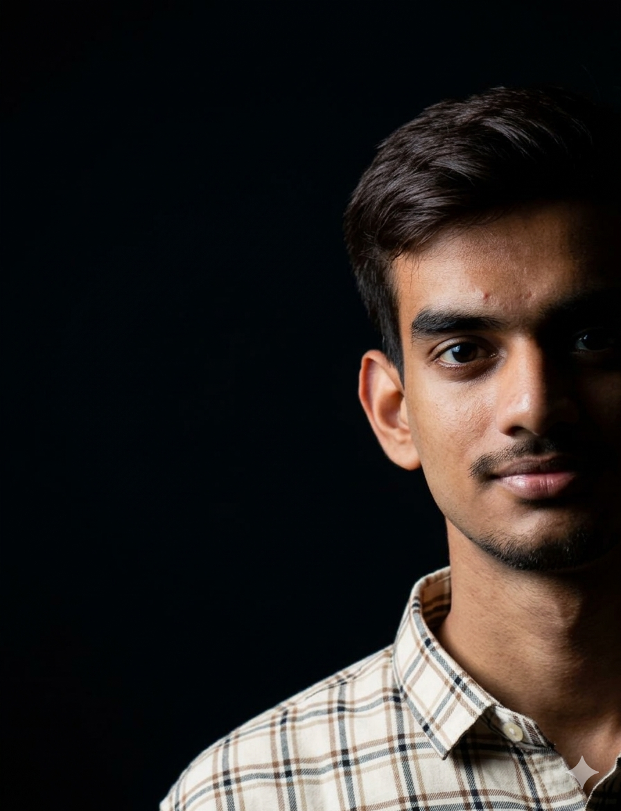

Available for internships & freelance
Hi, I'm
Aditya Dixit
|
I build intelligent software solutions, analyze complex datasets, and develop AI-powered applications that solve real-world problems.
0
Major Projects
AI
Data Science Enthusiast
CSE
B.Tech Student

Location
Lucknow, Uttar Pradesh
About me
Computer Science student building at the intersection of data, AI, and software.
I am a Computer Science undergraduate at BBDITM Lucknow, pursuing B.Tech CSE from 2023 to 2027. My work focuses on Data Science, Machine Learning, Data Analytics, and Software Development, with a practical bias toward projects that can become useful products.
I work with Python, SQL, data cleaning, data visualization, statistical analysis, and predictive modeling to extract insights from complex datasets. On the engineering side, I build with JavaScript, React.js, Firebase, FastAPI, Supabase, and core software foundations like OOP, data structures, operating systems, and networks.
I enjoy problem solving across AI-powered road safety, healthcare analytics, and real-time emergency systems. The goal is simple: turn raw ideas and raw data into reliable software that helps people make better decisions.
Skills
Technical toolkit
A focused stack for data workflows, AI prototypes, dashboards, APIs, and modern web interfaces.
Projects
Premium AI and software work
Journey & Learning
Student journey with production-minded practice.
Education
Academic timeline
Achievements
Signals of momentum
Contact